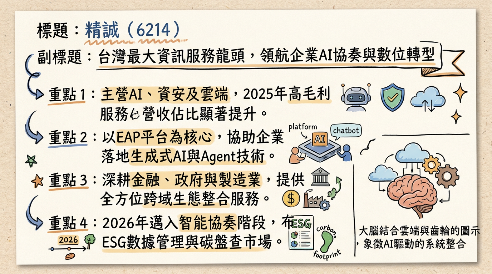
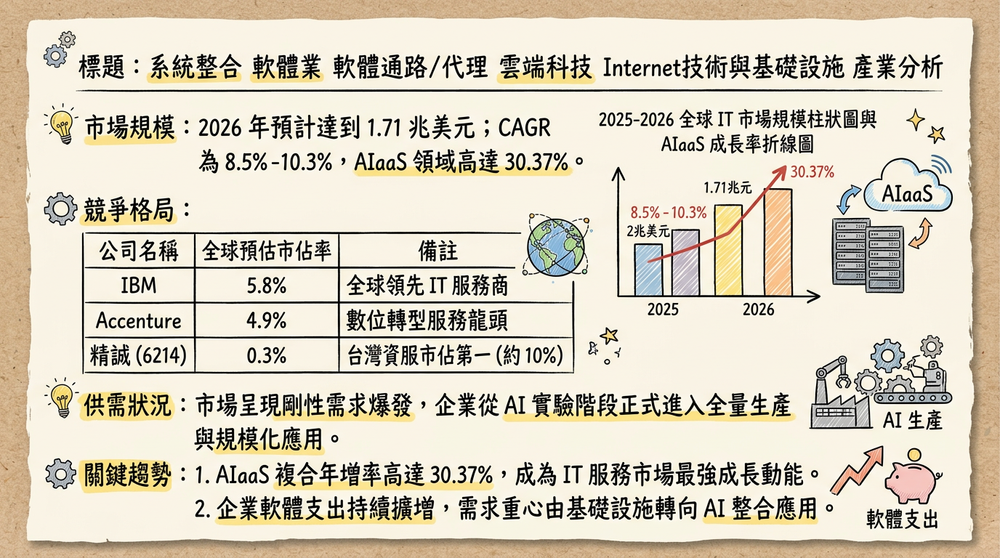
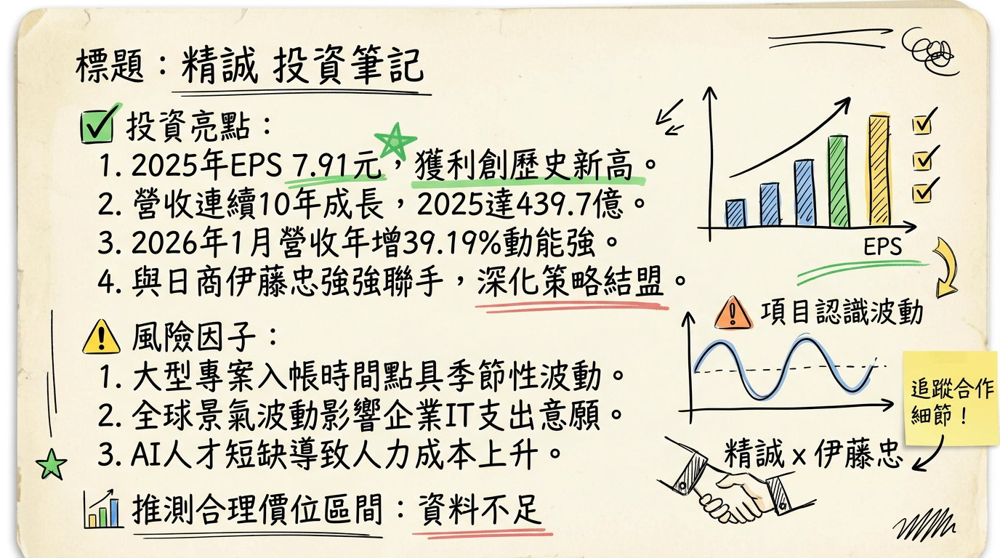

6214 精誠 深度研究報告：從系統整合轉型「AI 編排者」，獲利創歷史新高進入收割期
一句話摘要
精誠資訊（6214）憑藉 AI Orchestration (智能協奏) 轉型與 Global IT Service (台商出海) 雙引擎，2025 年 EPS 達 7.91 元 創歷史新高，2026 年 1 月營收年增 39.19% 展現強勁動能，正從傳統代理商估值轉向 AI 服務商評價。
公司概覽
精誠資訊為台灣資服業龍頭，已由傳統系統整合（SI）進化為「生態整合者」，並於 2026 年全面邁向 Ai4iA (AI for Intelligent Action) 階段。
【2025 年營收結構與業務分布】
| 業務群 | 營收佔比 | 毛利水準 | 核心產品與服務內容 |
|---|
| VAD (增值代理分銷) | 50% - 55% | 較低 | 代理 Microsoft、NVIDIA、Oracle 等軟硬體 |
| SI (系統整合服務) | 25% - 30% | 中等 | 雲地整合、混合雲託管、數位轉型專案 |
| Industry (行業應用) | 15% - 20% | 最高 | SYSTEX EAP (AI 平台)、FinTech、ESG 碳盤查系統 |
- 地理營收貢獻： 台灣 (81%)、海外 (19%，包含新加坡 SYSTEX Asia、中國、香港、日本、越南等共 50+ 據點)。
核心競爭優勢
AI Orchestration (AI 編排能力)： 透過 SYSTEX EAP 平台，能將 Microsoft Copilot 或 NVIDIA 方案整合至企業既有 ERP/CRM 流程，解決原廠難以觸及的客製化落地問題。
龐大客戶基底： 擁有台灣最廣泛的金融、製造與半導體客戶群，形成極高的轉換壁壘與資安剛性需求。
生態系聯防： 透過併購（藍新、凱信、金橋資訊）與策略聯盟（日本伊藤忠），提供從底層基礎設施到高層 AI 應用的全棧式服務。
財務分析
【近 6 個月月營收趨勢表格】
| 月份 | 營收金額 (億元) | 月增率 MoM | 年增率 YoY | 備註 |
|---|
| 2026/01 | 44.62 | -2.11% | +39.19% | 歷年同期新高 |
| 2025/12 | 45.58 | +25.85% | +23.87% | 年底結案高峰 |
| 2025/11 | 36.22 | +13.42% | -11.53% | 基期影響 |
| 2025/10 | 31.93 | -40.62% | +10.89% | - |
| 2025/09 | 53.77 | +47.56% | +58.66% | 台積電/微軟專案認列 17.7 億 |
| 2025/08 | 36.44 | +1.24% | +37.34% | - |
- 2024 實際： 營收 389.5 億元，EPS 7.66 元。
- 2025 實際： 營收 439.7 億元 (年增 12.89%)，EPS 7.91 元 (歷史新高)。
- 2026 預估： 法人一致預期 EPS 落在 8.0~8.4 元 區間。
法說會重點
轉型方向： 定位為「AI 編排者」，聚焦 AI 算力、算法、算數三算整合。
海外訂單： SYSTEX Asia 已成為成長引擎，配合台商「China+1」政策，在東南亞與日本建廠之 IT 基礎設施訂單能見度高。
資本支出： 聚焦 AI 算力中心建置及策略性併購（如 2026 年預計合併金橋資訊）。
訂單展望： 半導體大廠軟體授權長約持續，金融業 AI 預算無上限，2026 年目標維持雙位數成長。
券商觀點
【目標價與評等表】
| 券商名/來源 | 目標價 | 評等 | 日期 | 關鍵理由 |
|---|
| Investing.com | 158.00 元 | 買入 | 2026/02/11 | AI 轉型商機與穩健殖利率 |
| 法人機構平均 | 125-140 元 | 增加持股 | 2026/02/25 | 2025 獲利超預期，上修 2026 EPS |
| CMoney 法人 | 120 元 | 買進 | 2025/10/31 | 預估 2026 EPS 為 8.4 元 |
財報深度分析
【利潤率趨勢表格】
| 期間 | 毛利率 | 營業利益率 | 稅後淨利率 | EPS (元) |
|---|
| 2025 Q3 | 18.94% | 2.74% | 4.80% | 1.84 (估) |
| 2025 Q2 | 23.15% | 4.67% | 6.81% | 2.15 (估) |
| 2025 Q1 | 21.23% | 4.99% | 3.07% | 1.42 (估) |
| 2024 全年 | 22.00% | 3.50% | 5.20% | 7.66 |
- 存貨分析： 2025 Q3 存貨周轉天數回降至 64.28 天（Q2 為 79.72 天），顯示專案交付效率提升。
- 資本支出： 主要投入 AI 算力中心與資安監控中心 (SOC)，折舊穩定緩升。
股權異動與資本結構
重大合併： 2026 年董事會決議將於股東常會報告與 金橋資訊 (6133) 合併，旨在強化基礎建設端綜效。
策略股東： 日本 伊藤忠商事 (Itochu) 於 2025 年底取得約 1% 股權，雙方結盟進軍全球半導體 IT 服務。
申報轉讓： 2025 年 3-5 月僅有經理人小額贈與轉讓（共 42 張），近期無大股東拋售。
股利政策： 2026 年預計配息 5.2 ~ 5.5 元，殖利率維持在 4.5% - 5% 高防禦區間。
產業分析
【台灣資服同業比較表 (2025 年數據)】
| 公司 (代號) | 2025 營收 (億) | 毛利率 | EPS (元) | 2026/01 營收動能 |
|---|
| 精誠 (6214) | 439.69 | 23.0% | 7.91 | +39.19% |
| 零壹 (3029) | ~190 (估) | ~13% | ~5.0 (估) | +61.66% |
| 敦陽科 (2480) | ~85 (估) | ~26% | ~7.3 (估) | 穩健 |
- 市場規模： 全球 IT 服務 2026 年預計達 1.71 兆美元，其中 AI 代理 (Agentic AI) 為 2026 年核心成長區塊。
- 競爭格局： 精誠位居台灣第三（僅次於 IBM 與中華電信），在「雲地整合」與「中台彈性」上具備在地化優勢。
近期催化劑
* 2026/01 營收創同期新高（+39%），開紅盤奠定 Q1 基調。
* 入選標普永續年鑑，為台灣資服業唯一，吸引 ESG 基金配置。
* 日本伊藤忠策略聯盟，帶動台積電供應鏈海外 IT 訂單。
* 人才競爭推升工程師人力成本。
* 短期借款增加可能帶來利息壓力。
* 地緣政治風險若升溫，可能導致企業縮減非核心 IT 支出。
⭐ 成長動能時間軸
- 2025 Q4： 完成凱信資訊、SYSTEX Asia 整合，海外營收佔比達 19%。
- 2026 Q1： SYSTEX EAP 受 600 位 CIO 評選為最信賴 AI 平台；1 月營收強勁。
- 2026 Q2： 股東會通過與 金橋資訊 合併案；公佈 2025 年度股利（預計 >5.2 元）。
- 2026 Q3-Q4： Agentic AI (AI 代理) 專案大規模交付，高毛利顧問與 API 服務貢獻放大。
- 2026 全年： 配合台商在日本、新加坡、越南建廠，海外獲利預計年增雙位數。
2026 展望
成長動能： AI 落地需求從實驗轉向生產，帶動軟體與服務佔比提升；海外擴張與策略夥伴（伊藤忠）綜效顯現。
風險因子： 全球通膨可能導致 IT 採購週期拉長；硬體專案佔比若過高會稀釋整體毛利率。
投資結論
獲利能見度高： 營收連續十年創新高，2025 EPS 7.91 元優於預期。
AI 轉型收割期： EAP 平台已獲得 CIO 市場認可，2026 年將由「專案認列」轉向更多的「訂閱/服務毛利」。
防禦與攻擊兼具： 現金殖利率達 4.5% 以上具防禦性，AI 與海外併購則提供股價向上推升動力。
目標價區間建議： 短期支撐 115-120 元；合理目標價看好 135-145 元；若 AI 訂閱制轉型成功，不排除挑戰券商共識之 158 元。
本報告由 AI 自動產生，資料來源為公開網路資訊，僅供參考，不構成投資建議。產生時間：2026-03-02 19:26
📊 資訊卡


